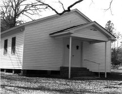

Wendy Taylor Carlisle
Not
Thinking of the Alligator
Men jumped. We could see
their choppers,
black and white
on our color TV’s,
the insect whirr in our ears. It seemed
we were in the paddy
instead of
tipped back in our Laze-E-Boy
loungers, bound
like stump-tied dogs
to our 4-A families.
A few words of
journalese and we
were the fatalities
on the rise. In college,
we learned
that,
wholly aggressive, alligators are lazy
hunters. They wait for prey to come to them
before they hiss and snap. Who hasn’t
lost a lapdog? Gators eat anything:
beer bottles, car tags, tennis balls.
After they swallow tennis balls, they
can’t sink but seethe on the surface,
their top-mounted eyes like gun
turrets
pointed up to the specks of
black
sinking toward their swamp.
We study
them; they
accept the sky’s gifts,
watch
the clouds descend
like grackle onto
the cypress
trees, signaling sunset. And
after all this time,
what do any of us know now
about vertical takeoff or
landing, about
silver-sided planes
that rose through milky air,
shot forward, dropped into the night?
|

(photo by Jennifer Smith) |
{kind=link}